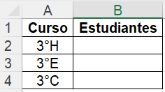

Tablas Dinámicas
En la carpeta digital, crear un documento de Goggle Docs con el nombre Tablas Dinámicas. Luego:
- Investigar y registrar ¿Qué es y para qué sirve una tabla dinámica en Excel?
- Realizar las anotaciones correspondientes a la práctica:
- Descargar la tabla del siguiente link
- Abrir en Excel y Habilitar edición
- Eliminar las siguientes columnas: Marca temporal, Equipo, Dirección de correo electrónico principal y alternativo.
- Filtrar los estudiantes de 1°A y elimina las filas filtradas. Hacer lo mismo con 1°B, 1°C, 2°A, 2°B y 2°C.
- Desactivar la herramienta filtro.
- Insertar una nueva columna (en la C) con el título Alumno
- Insertar la función CONCATENAR, para unir el apellido y el nombre separado por un espacio en blanco.
- Ocultar las columnas: Nombre y Apellido.
- Ordenar alfabéticamente la lista de acuerdo a la columna Alumno.
- Cambiar el nombre de la página a: DATOS
- Insertar una nueva hoja y llamarla GRÁFICO. Crear la siguiente tabla: 
- Insertar la función CONTAR.SI, para saber cuántos estudiantes hay por cada curso.
- Insertar un gráfico basado en la cantidad de estudiantes por curso.
- Personalizar el gráfico.
- Guardar el libro y subirlo a la carpeta digital.